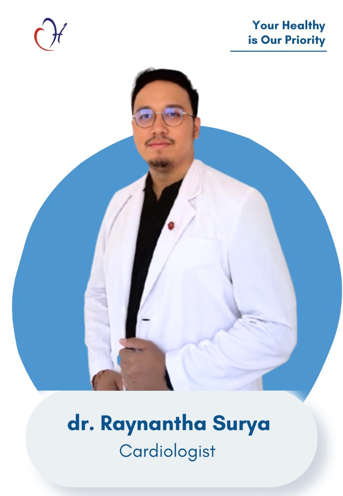
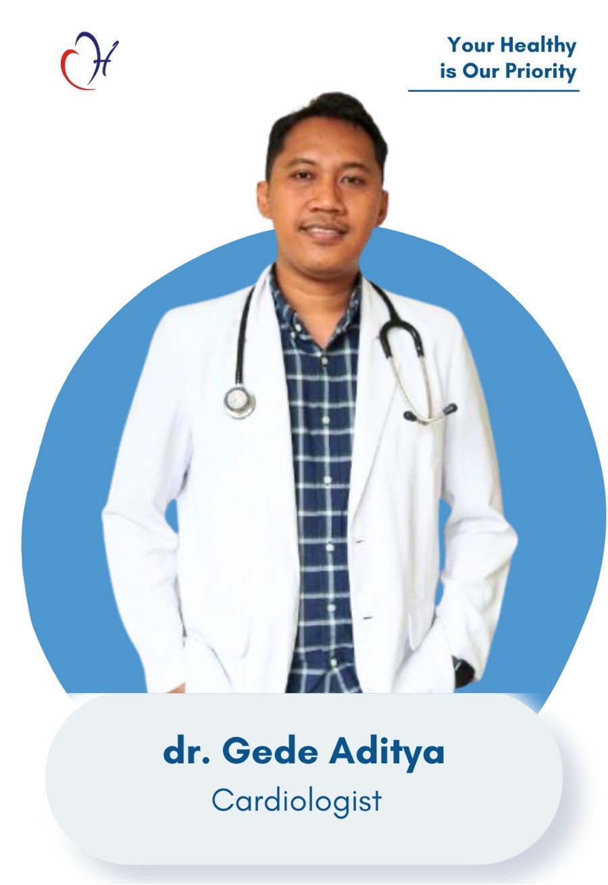
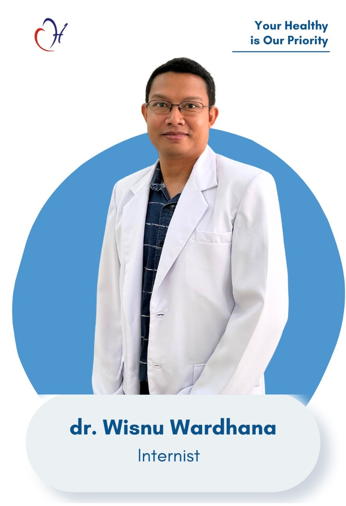
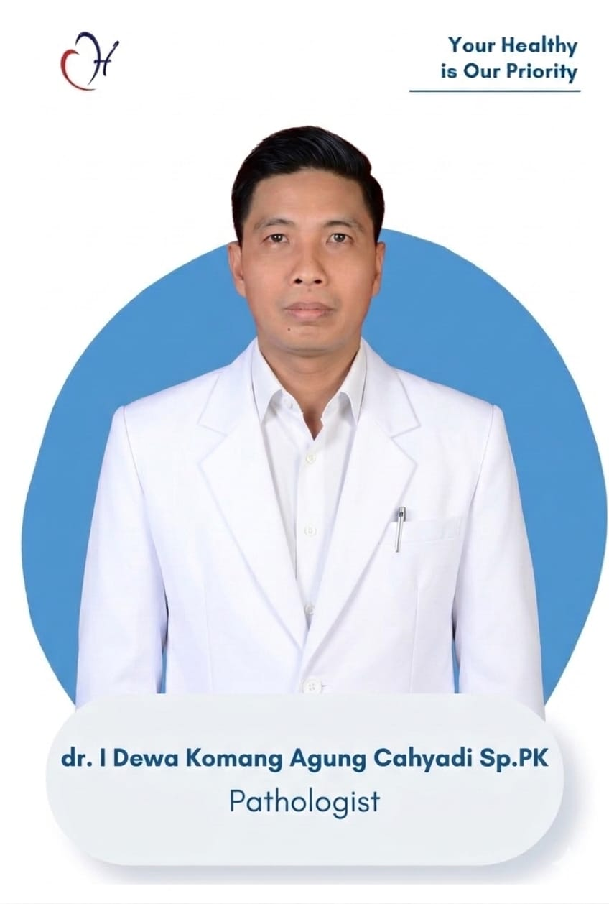

Jantung & Pembuluh Darah
Jantung & Pembuluh Darahdr. Gede Aditya, Sp.JP
- Sel, Rab, Sab 06:00 - 07:25
- Sen, Sel, Kam, Jum 18:00 - 21:00
- Minggu Libur

Penyakit Dalamdr. I Made Wisnu Wardhana, Sp.PD
- Senin & Kamis 14:30 - 17:00
- Sel, Rab, Jum 13:00 - 17:00
- Sabtu - Minggu Libur
 Spesialis Anak
Spesialis Anak
 Spesialis Radiologi
Spesialis Radiologi

Spesialis Patologi Klinikdr. I Dewa Komang Agung Cahyadi Sp.PK
- Senin - Jumat 15:00 - 17:00
- Sabtu - Minggu Libur